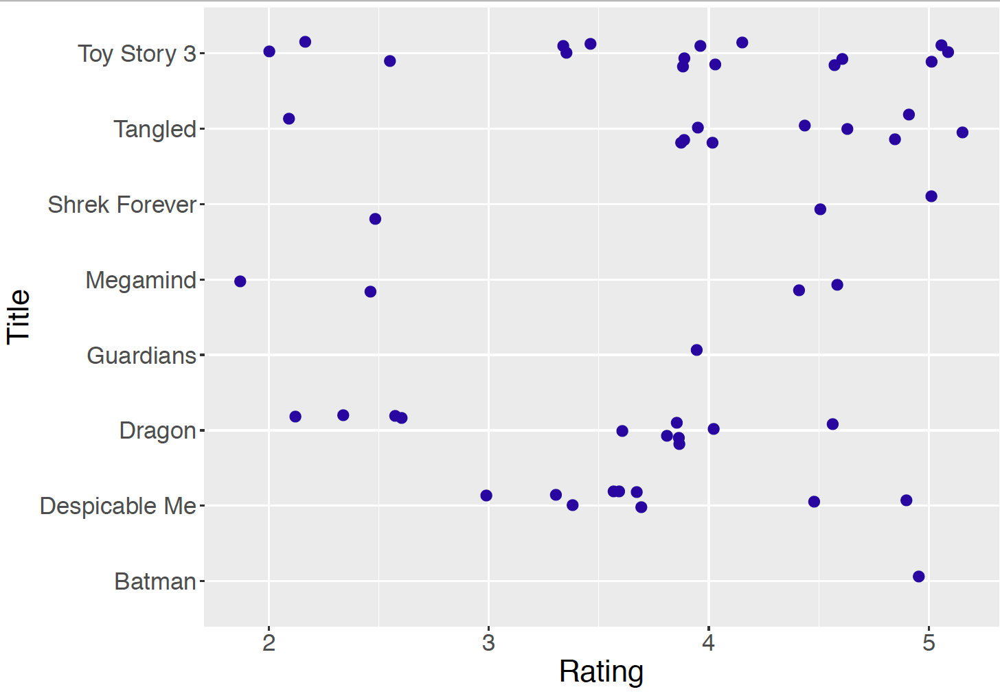
6 Bayesian Hierarchical Modeling
6.1 Introduction
6.1.1 Observations in groups
Chapters 7, 8, and 9 make an underlying assumption about the source of data: observations are assumed to be identically and independently distributed (i.i.d.) following a single distribution with one or more unknown parameters. In Chapter 7, the Binomial data model is based on the assumptions that a student’s chance of preferring dining out on Friday is the same for all students, and the dining preferences of different students are independent. To refresh your memory, recall the four conditions of a Binomial experiment: a fixed number of trials, only two outcomes, a fixed success probability, and independent trials. In Chapter 8, the Normal sampling model is based on the assumptions that Roger Federer’s time-to-serves are independent observations following a single Normal distribution with an unknown mean \(\mu\) and known standard deviation \(\sigma\). That is, \(Y_i \overset{i.i.d.}{\sim} \textrm{Normal}(\mu, \sigma)\). Similarly in Chapter 9, the underlying assumption is that the snowfall amounts in Buffalo for the last 20 Januarys follow the same \(\textrm{Normal}(\mu, \sigma)\) distribution with both parameters unknown.
In many situations, treating observations as i.i.d. from the same distribution with the same parameter(s) is not sensible. In our dining out example, dining preferences for students may be different from dining performances of senior citizens, so it would not make sense to use a single success probability for a combined group of students and senior citizens. In a similar fashion, if one considered time-to-serve data for a group of tennis players, then it would not be reasonable to use a single Normal distribution with a single mean to represent these data – the mean time-to-serve for a quick-serving player would likely be smaller than the mean time-to-serve for a slower player. For many applications, some observations share characteristics, such as age or player, that distinguish them from other observations, therefore multiple distinct groups are observed.
6.1.2 Example: standardized test scores
As a new example, consider a study in which students’ scores of a standardized test such as the SAT are collected from five different senior high schools in a given year. Suppose a researcher is interested in learning about the mean SAT score. Since five different schools participated in this study and students’ scores might vary from school to school, it makes sense for the researcher to learn about the mean SAT score for each school and compare students’ mean performance across schools.
To start modeling this education data, it is inappropriate to use \(Y_i\) as the random variable for the SAT score of student \(i\) (\(i = 1, \cdots, n\), where \(n\) is the total number of students from all five schools) since this ignores the inherent grouping of the observations. Instead, the researcher adds a school label \(j\) to \(Y_i\) to reflect the grouping. Let \(Y_{ij}\) denote the SAT score of student \(i\) in school \(j\), where \(j = 1, \cdots, 5\), and \(i = 1, \cdots, n_j\), where \(n_j\) is the number of students in school \(j\), and \(n = \sum_{j=1}^{5}n_j\).
Since SAT scores are continuous, the Normal sampling model is a reasonable choice for a data distribution. Within school \(j\), one assumes that SAT scores are i.i.d. from a Normal data model with a mean and standard deviation depending on the school. Specifically, one assumes a school-specific mean \(\mu_j\) and a school-specific standard deviation \(\sigma_j\) for the Normal data model for school \(j\). Combining the information for the five schools, one has
\[\begin{equation} Y_{ij} \overset{i.i.d.}{\sim} \textrm{Normal}(\mu_j, \sigma_j), \label{eq:introLik} \end{equation}\] where \(j = 1, \cdots, 5\) and \(j = 1, \cdots, n_j\).
6.1.3 Separate estimates?
One approach for handling this group estimation problem is find separate estimates for each school. One focuses on the observations in school \(j\),\(\{Y_{1j}, Y_{2j}, \cdots, Y_{n_jj}\}\), choose a prior distribution \(\pi(\mu_j, \sigma_j)\) for the mean and the standard deviation parameters, follow the Bayesian inference procedure in Chapter 9 and obtain posterior inference on \(\mu_j\) and \(\sigma_j\).
If one assumes that the prior distributions on the individual parameters for the schools are independent, one is essentially fitting five separate Bayesian models and one’s inferences about one particular school will be independent of the inferences on the remaining schools.
This “separate estimates” approach may be reasonable, especially if the researcher thinks the means and the standard deviations from the five Normal models are completely unrelated to each other. That is, one’s prior beliefs about the parameters of the SAT score distribution in one school are unrelated to the prior beliefs about the distribution parameters in another school.
To see if this assumption is reasonable, let us consider a thought experiment for the school testing example. Suppose you are interested in learning about the mean SAT score \(\mu_N\) for school \(N\). You may not be familiar with the distribution of SAT scores and it would be difficult to construct an informative prior for \(\mu_N\). But suppose that you are told that the students from another school, call it school \(M\), average 1,200 on their SAT scores. That information would likely influence your prior on \(\mu_N\), since now you have some general idea about SAT scores. This means that your prior beliefs about the mean SAT scores \(\mu_N\) and \(\mu_M\) are not independent – some information about one school’s mean SAT scores would change your prior on the second school’s mean SAT score. So in many situations, this independence assumption would be questionable.
6.1.4 Combined estimates?
Another way to handle this group estimation problem is to ignore the fact that there is a grouping variable and estimate the parameters in the combined sample. In our school example, one ignores the school variable and simply assumes that the SAT scores \(Y_i's\) are distributed from a single Normal population with mean \(\mu\) and standard deviation \(\sigma\). Here, \(i = 1, \cdots, n\) where \(n\) is the total number of students from all five schools.
If ones ignores the grouping variable, then the inference procedure described in Chapter 9 can be used. One constructs a prior for the parameters \(\mu\) and \(\sigma\) and use Gibbs sampling to obtain a simulated sample from the posterior distribution of \((\mu, \sigma)\).
Using this approach, one is effectively ignoring any differences between the five schools. Although it is reasonable to assume some similarity in the SAT scores across different schools, one probably does not believe that the schools are indistinguishable. In fact, state officials assume the schools have distinct features such as student bodies with different socioeconomic statuses so that SAT scores from different schools can be substantially different. In some states in the United States, all schools are ranked on different criteria which reflects the belief that schools are different with respect to student achievement.
6.1.5 A two-stage prior leading to compromise estimates
If one applies the “separate estimates” approach, one performs separate analyses on the different groups, and one ignores any prior knowledge about the similarity between the groups. On the other extreme, the “combined estimates” approach ignores the grouping variable and assumes that the groups are identical with respect to the response variable SAT score. Is there an alternative approach that compromises between the separate and combined estimate methods?
Let us return to the model \(\textrm{Normal}(\mu_j, \sigma_j)\) where \(\mu_j\) is the parameter representing the mean SAT score of students in school \(j\). For simplicity of discussion it is assumed the standard deviation \(\sigma_j\) of the \(j\)-th school is known. Consider the collection of five mean parameters, \(\{\mu_1, \mu_2, \mu_3, \mu_4, \mu_5\}\) representing the means of the five schools’ SAT scores. One believes that the \(\mu_j\)’s are distinct, because each \(\mu_j\) depends on the characteristics of school \(j\), such as size and socioeconomic status. But one also believes that the mean parameters are similar in size. Imagine if you were given some information about the location of one mean, say \(\mu_j\), then this information would influence your beliefs about the location of another mean \(\mu_k\). One wishes to construct a prior distribution for the five mean parameters that reflects the belief that \(\mu_1, \mu_2, \mu_3, \mu_4,\) and \(\mu_5\) are related or similar in size. This type of “similarity” prior ] allows one to combine the SAT scores of the five schools in the posterior distribution in such a way to obtain compromise estimates of the separate mean parameters.
The prior belief in similarity of the means is constructed in two stages.
[Stage 1] The prior distribution for the \(j\)-th mean, \(\mu_j\) is Normal, where the mean and standard deviation parameters are shared among all \(\mu_j\)’s: \[\begin{equation} \mu_j \mid \mu, \tau \sim \textrm{Normal}(\mu, \tau), \, \, j = 1, ..., 5. \label{eq:introPrior} \end{equation}\]
[Stage 2] In the Stage 1 specification, the parameters \(\mu\) and \(\tau\) are unknown. So this stage assigns the parameters a prior density \(\pi\). \[\begin{equation} \mu, \tau \sim \pi(\mu, \tau). \end{equation}\]
Several comments can be made about this two-stage prior.
Specifying the same prior distribution for all \(\mu_j\)’s at Stage 1 does not say that the \(\mu_j\)’s are the same value. Instead, Stage1 indicates that the \(\mu_j\)’s a priori are related and come from the same distribution. If the prior distribution \(\textrm{Normal}(\mu, \tau)\) has a large standard deviation (that is, if \(\tau\) is large), the \(\mu_j\)’s can be very different from each other a priori. On the other hand, if the standard deviation \(\tau\) is small, the \(\mu_j\)’s will be very similar in size.
To follow up the previous comment, if one considers the limit of the Stage 1 prior as the standard deviation \(\tau\) approaches zero, the group means \(\mu_j\) will be identical. Then one is in the “combined groups” situation where one is pooling the SAT data to learn about a single population. At the other extreme, if one allows the standard deviation \(\tau\) of the Stage 1 prior to approach infinity, then one is saying that the group means \(\mu_1, ..., \mu_5\) are unrelated and that leads to the separate estimates situation.
In the school testing example, this prior \(\textrm{Normal}(\mu, \tau)\) distribution is a model about all \(\mu_j\)’s in the U.S., i.e. the population of SAT score means corresponding to all schools in the United States. The five schools in the dataset represent a sample from all schools in the U.S.
Since \(\mu\) and \(\tau\) are parameters in the prior distribution, they are called hyperparameters. Learning about \(\mu\) and \(\tau\) provides information about the population of \(\mu_j\)’s. Naturally in Bayesian inference, one learns about \(\mu\) and \(\tau\) by specifying a hyperprior distribution and performing inference based on the posterior distribution. In this example, inferences about \(\mu\) and \(\tau\) tell us about the location and spread of the population of mean SAT scores of schools in the U.S.
To recap, one models continuous outcomes in groups through the school-specific sampling density in Equation (10.1) and the common Normal prior distribution in Equation (10.2) for the mean parameters. An important and appealing feature of this approach is learning simultaneously about each school (group) and learning about the population of schools (groups). Specifically in the current setup, the model simultaneously estimates the means for the schools (the \(\mu_j\)’s) and the variation among the means (\(\mu\) and \(\tau\)). It will be seen that the hierarchical model posterior estimates for one school borrows information from other schools. This process is often called “partial pooling” information among groups.
From the structural point of view, due to the two stages of the model, this approach is called hierarchical or multilevel modeling. In essence, hierarchical modeling takes into account information from multiple levels, acknowledging differences and similarities among groups. In the posterior analysis, one learns simultaneously about each group and learns about the population of groups by pooling information across groups.
In this chapter, hierarchical modeling is described in two situations that extend the Bayesian models for one proportion and one Normal mean described in Chapters 7 and 8, respectively. Section 10.2 introduces hierarchical Normal modeling using a sample of ratings of animation movies released in 2010; and Section 10.3 describes hierarchical Beta-Binomial modeling with an example of deaths after heart attack. In each section, we motivate the consideration of hierarchical models, outline the model structure, and implement model inference through Markov chain Monte Carlo simulation.
6.2 Hierarchical Normal Modeling
6.2.1 Example: ratings of animation movies
MovieLens is a website which provides personalized movie recommendations from users who create accounts and rate movies that they have seen. Based on such information, MovieLens works to build a custom preference profile for each user and provide movie recommendations. MovieLens is run by GroupLens Research, a research lab at the University of Minnesota, who has made MovieLens rating datasets available to the public. GroupLens Research regularly updates these datasets on their website and the datasets are useful for new research, education and development initiatives.
In one study, a sample from the MovieLens database was collected on movie ratings for eight different animation movies released in 2010. There are a total of 55 movie ratings, where a rating is is for a particular animation movie completed by a MovieLens user. The ratings are likely affected by the quality of the movie itself, as some movies are generally favored by the audience while others might be less favored. Therefore there exists a natural grouping of the 55 ratings by the movie title.
Figure 6.1 displays a jittered dotplot of the ratings grouped by movie title and Table 6.1 lists the sample mean, sample standard deviation, and the number of ratings for each title. Note the variability in the sample sizes – “Toy Story 3’ received 16 ratings and”Legend of the Guardians” and “Batman: Under the Red Hood” only received a single rating. For a movie with only one observed rating, such as “Legend of the Guardians” and “Batman: Under the Red Hood”, it would be difficult to learn much about its mean rating. Here it is desirable to improve the estimate of its mean rating by using rating information from similar movies.
| Movie Title | Mean | SD | N |
|---|---|---|---|
| Batman: Under the Red Hood | 5.00 | 1 | |
| Despicable Me | 3.72 | 0.62 | 9 |
| How to Train Your Dragon | 3.41 | 0.86 | 11 |
| Legend of the Guardians | 4.00 | 1 | |
| Megamind | 3.38 | 1.31 | 4 |
| Shrek Forever After | 4.00 | 1.32 | 3 |
| Tangled | 4.20 | 0.89 | 10 |
| Toy Story 3 | 3.81 | 0.96 | 16 |
6.2.2 A hierarchical Normal model with random \(\sigma\)
In this situation it is reasonable to develop a model for the movie ratings where the grouping variable is the movie title. We index a ratings by two subscripts, where \(Y_{ij}\) denotes the \(i\)-th rating for the \(j\)-th movie title (\(j = 1, \cdots, 8\)).
What sampling model should be used for the movie ratings? Since the ratings are continuous, it is reasonable to use the Normal data model described in Chapter 8. Recall that a Normal model has two parameters, the mean and the standard deviation. Based on previous reasoning, the mean parameter is assumed to be movie-specific, so \(\mu_j\) will represent the mean of the ratings for movie \(j\). Thinking about the standard deviation parameter, should the standard deviation also be movie-specific, where \(\sigma_j\) represents the standard deviation of the ratings for movie \(j\)? Or can we assume a common value of the standard deviation, say \(\sigma\), across movies? For simplicity and ease of illustration, a common and shared unknown standard deviation \(\sigma\) is assumed for all Normal models. This is a simplified version of random \(\sigma_j\)’s — the more flexible hierarchical model with random \(\sigma_j\)’s will be left as an end-of-chapter exercise.
One begins by writing down the sampling distributions for the ratings of the eight movies. Recall that \(Y_{ij}\) denotes the \(i\)-th rating of movie \(j\), where \(\mu_j\) denote the mean of the Normal model for movie \(j\), and \(\sigma\) denote the shared standard deviation of the Normal models across different movies. In our notation, \(n_j\) represents the number of ratings for movie \(j\).
- Sampling, for \(j = 1, \cdots, 8\) and \(i = 1, \cdots, n_j\): \[\begin{equation} Y_{ij} \mid \mu_j, \sigma \overset{i.i.d.}{\sim} \textrm{Normal}(\mu_j, \sigma). \end{equation}\]
The next task is to set up a prior distribution for the eight mean parameters, \(\{\mu_1, \mu_2, \cdots, \mu_8\}\) and the shared standard deviation parameter \(\sigma\). Focus first on the prior distribution for the mean parameters. Since these movies are all animations, it is reasonable to believe that the mean ratings are similar across movies. So one assigns each mean rating the same Normal prior distribution at the first stage:
- Prior for \(\mu_j\), \(j = 1, \cdots, 8\): \[\begin{equation} \mu_j \mid \mu, \tau \sim \textrm{Normal}(\mu, \tau). \end{equation}\]
As discussed in Section 10.1, this prior allows for a flexible method for pooling information across movies. If the prior distribution has a large standard deviation (e.g. a large value of \(\tau\)), the \(\mu_j\)’s are very different from each other a priori, and one would have modest pooling of the eight sets of ratings. If instead this prior has a small standard deviation (e.g. a small value of \(\tau\)), the \(\mu_j\)’s are very similar a priori and one would essentially be pooling the ratings to get an estimate at each of the \(\mu_j\). This shared prior \(\textrm{Normal}(\mu, \tau)\) distribution among the \(\mu_j\)’s simultaneously estimates both a mean for each movie (the \(\mu_j\)’s) and also lets us learn about variation among the movies by the parameter \(\tau\).
The hyperparameters \(\mu\) and \(\tau\) are treated as random since we are unsure about the degree of pooling of the eight sets of ratings. In typical practice, one specifies weakly informative hyperprior distributions for these “second-stage” parameters, indicating that one has little prior knowledge about the locations of these parameters. After observing data, inference is performed about \(\mu\) and \(\tau\) based on their posterior distributions. The posterior on the mean parameter \(\mu\) is informative about an “average” mean rating and the posterior on \(\tau\) lets one know about the variation among the \(\mu_j\)’s in the posterior.
Treating \(\mu\) and \(\tau\) as random, one arrives at the following hierarchical model.
Sampling: for \(j = 1, \cdots, 8\) and \(i = 1, \cdots, n_j\): \[\begin{equation} Y_{ij} \mid \mu_j, \sigma \overset{i.i.d.}{\sim} \textrm{Normal}(\mu_j, \sigma). \label{eq:NormalLik} \end{equation}\]
Prior for \(\mu_j\), Stage 1: \(\mu_j\), \(j = 1, \cdots, 8\): \[\begin{equation} \mu_j \mid \mu, \tau \sim \textrm{Normal}(\mu, \tau). \label{eq:NormalMuPrior} \end{equation}\]
Prior for \(\mu_j\), Stage 2: \[\begin{equation} \mu, \tau \sim \pi(\mu, \tau). \label{eq:NormalMuHyperprior} \end{equation}\]
In our model \(\pi(\mu, \tau)\) denotes an arbitrary joint hyperprior distribution for the “Stage 2” hyperparameters \(\mu\) and \(\tau\). When the MovieLens ratings dataset is analyzed, the specification of this hyperprior distribution will be described.
To complete the model, one needs to specify a prior distribution for the standard deviation parameter, \(\sigma\). As discussed in Chapter 9, when making inference about the standard deviation in a Normal model, one uses a Gamma prior on the precision (the inverse of the variance), for example,
- Prior for \(\sigma\): \[\begin{eqnarray} 1/\sigma^2 \mid a_{\sigma}, b_{\sigma} &\sim& \textrm{Gamma}(a_{\sigma}, b_{\sigma}) \label{eq:NormalSigmaPrior} \end{eqnarray}\]
One assigns a known Gamma prior distribution for \(1/\sigma^2\), with fixed hyperparameter values \(a_{\sigma}\) and \(b_{\sigma}\). In some situations, one may consider the situation where \(a_{\sigma}\) and \(b_{\sigma}\) are random and assign hyperprior distributions for these unknown hyperparameters.
Before continuing to the graphical representation and simulation by MCMC using JAGS, it is helpful to contrast the two-stage prior distribution for {\(\mu_j\)} and the one-stage prior distribution for \(\sigma\). The hierarchical model specifies a common prior for the means \(\mu_j\)’s which induces sharing of information across ratings from different movies. On the other hand, the model uses a shared \(\sigma\) for all movies which also induces sharing of information, though different from the sharing induced by the two-stage prior distribution for {\(\mu_j\)}.
What is the difference between the two types of sharing? For the means {\(\mu_j\)}, we have discussed that specifying a common prior distribution for different \(\mu_j\)’s pools information across the movies. One is simultaneously estimating both a mean for each movie (the \(\mu_j\)’s) and the variation among the movies (\(\mu\) and \(\tau\)). For the standard deviation \(\sigma\), the hierarchical model also pools information across movies. However, all of the observations are combined in the estimation of \(\sigma\). Since separate values of \(\sigma_j\)’s are not assumed, one cannot learn about the differences and similarities among the \(\sigma_j\)’s. If one is interested in pooling information across movies for the \(\sigma_j\)’s, one needs to allow random \(\sigma_j\)’s, and specify a two-stage prior distribution for these parameters. Interested readers are encouraged to try out this approach as an end-of-chapter exercise.
Graphical representation of the hierarchical model
An alternative way of expressing this hierarchical model uses the following graphical representation.
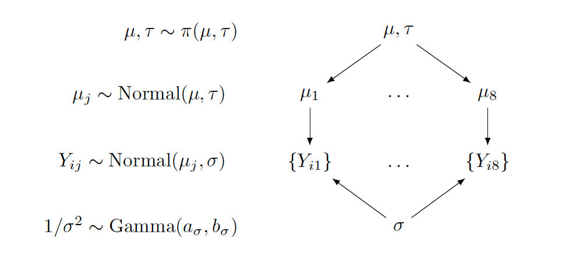
In the middle section of the graph, \(\{Y_{ij}\}\) represents the collection of random variables for all ratings of movie \(j\), and the label to the left indicates the assumed Normal sampling distribution. The two parameters in the Normal sampling density, \(\mu_j\) and \(\sigma\), are connected from above and below, with arrows pointing from the parameters to the random variables.
The upper section of the graph focuses on the \(\mu_j\)’s. All means follow the same prior, a Normal distribution with mean \(\mu\) and standard deviation \(\tau\). Therefore, arrows come from the common hyperparameters \(\mu\) and \(\tau\) to each \(\mu_j\). Since \(\mu\) and \(\tau\) are random, these second-stage parameters are associated with the prior label \(\pi(\mu, \tau)\).
The lowest section of the graph is about \(\sigma\), or to be precise, \(1/\sigma^2\). If one wants to allow hyperparameters \(a_{\sigma}\) and \(b_{\sigma}\) to be random as well, the lower part of the graph grows further, in a similar manner as the upper section for \(\mu_j\).
Second-stage prior
The hierarchical Normal model presented in Equations (10.6) through (10.9) has not specified the hyperprior distribution \(\pi(\mu, \tau)\). How does one construct a prior on these second-stage hyperparameters?
Recall that \(\mu\) and \(\tau\) are parameters for the Normal prior distribution for {\(\mu_j\)} the collection of eight different Normal sampling means. The mean \(\mu\) and standard deviation \(\tau\) in this Normal prior distribution reflect respectively the mean and spread of the mean ratings across eight different movies.
Following the discussion in Section 9.5.3, a typical approach for Normal models is to assign two independent prior distributions — a Normal distribution for the mean \(\mu\) and a Gamma distribution for the precision \(1 / \tau^2\). Such a specification facilitates the use of the Gibbs sampling due to the availability of the conditional posterior distributions of both parameters (see the details of this work in Section 9.5.3). Using this approach, the density \(\pi(\mu, \tau)\) is replaced by the two hyperprior distributions below.
- The hyperprior for \(\mu\) and \(\tau\): \[\begin{equation} \mu \mid \mu_0, \gamma_0 \sim \textrm{Normal}(\mu_0, \gamma_0) \end{equation}\] \[\begin{equation} 1/\tau^2 \mid a, b \sim \textrm{Gamma}(a_{\tau}, b_{\tau}) \end{equation}\]
The task of choosing a prior for \((\mu, \tau)\) reduces to the problem of choosing values for the four hyperparameters \(\mu_0, \gamma_0, a_{\tau}\), and \(b_{\tau}\). If one believes that \(\mu\) is located around the value of 3 and she is not very confident of this choice, the set of values \(\mu_0 = 3\) and \(\gamma_0 = 1\) could be chosen. As for \(\tau\), one chooses a weakly informative prior with \(a_{\tau} = b_{\tau} = 1\), as \(\textrm{Gamma}(1, 1)\). Moreover, to choose a prior for \(\sigma\), let \(a_{\sigma} = b_{\sigma} = 1\) to have the weakly informative \(\textrm{Gamma}(1, 1)\) prior.
6.2.3 Inference through MCMC
With the specification of the prior, the complete hierarchical model is described as follows:
Sampling: for \(j = 1, \cdots, 8\) and \(i = 1, \cdots, n_j\): \[\begin{equation} Y_{ij} \mid \mu_j, \sigma_j \overset{i.i.d.}{\sim} \textrm{Normal}(\mu_j, \sigma_j) \end{equation}\]
Prior for \(\mu_j\), Stage 1: for \(j = 1, \cdots, 8\): \[\begin{equation} \mu_j \mid \mu, \tau \sim \textrm{Normal}(\mu, \tau) \end{equation}\]
Prior for \(\mu_j\), Stage 2: the hyperpriors: \[\begin{equation} \mu \sim \textrm{Normal}(3, 1) \end{equation}\] \[\begin{equation} 1/\tau^2 \sim \textrm{Gamma}(1, 1) \end{equation}\]
Prior for \(\sigma\): \[\begin{equation} 1/\sigma^2 \sim \textrm{Gamma}(1, 1) \end{equation}\]
If one uses JAGS for simulation by MCMC, one writes out the model section by following the model structure above closely. Review Section 9.7 for an introduction and a description of several examples of JAGS.
Describe the model by a script
The first step in using the JAGS software is to write the following script defining the hierarchical model. The model is saved in the character string modelString.
Code
modelString <-"
model {
## sampling
for (i in 1:N){
y[i] ~ dnorm(mu_j[MovieIndex[i]], invsigma2)
}
## priors
for (j in 1:J){
mu_j[j] ~ dnorm(mu, invtau2)
}
invsigma2 ~ dgamma(a_s, b_s)
sigma <- sqrt(pow(invsigma2, -1))
## hyperpriors
mu ~ dnorm(mu0, g0)
invtau2 ~ dgamma(a_t, b_t)
tau <- sqrt(pow(invtau2, -1))
}
"In the sampling part of the script, note that the loop goes from 1 to N, where N is the number of observations with index i. However, because now N observations are grouped according to movies, indicated by j, one needs to create one vector, mu_j of length eight, and use MovieIndex[i] to grab the corresponding mu_j based on the movie index.
In the priors part of the script, the loop goes from 1 to J, and J = 8 in the current example. Inside the loop, the first line corresponds to the prior distribution for mu_j. Due to a commonly shared sigma, invsigma2 follows dgamma(a_g, b_g) outside of the loop. In addition, sigma <- sqrt(pow(invsigma2, -1)) is added to help track sigma directly.
Finally in the hyperpriors section of the script, one specifies the Normal hyperprior for mu, a Gamma hyperprior for invtau2. Keep in mind that the arguments in the dnorm in JAGS are the mean and the precision. If one is interested instead in the standard deviation parameter tau, one could return it in the script by using tau <- sqrt(pow(invtau2, -1)), enabling the tracking of its MCMC chain in the posterior inferences.
Define the data and prior parameters
After one has defined the model script, the next step is to provide the data and values for parameters of the prior. In the R script below, a list the_data contains the vector of observations, the vector of movie indices, the number of observations, and the number of movies. It also contains the Normal hyperparameters mu0 and g0, and two sets of Gamma hyperparameters (a_t and b_t) for invtau2, and (a_s and b_s) for invsigma2.
Code
library(ProbBayes)
y <- animation_ratings$rating
MovieIndex <- animation_ratings$Group_Number
N <- length(y)
J <- length(unique(MovieIndex))
the_data <- list("y" = y, "MovieIndex" = MovieIndex,
"N" = N, "J" = J,
"mu0" = 3, "g0" = 1,
"a_t" = 1, "b_t" = 1,
"a_s" = 1, "b_s" = 1)One uses the run.jags() function in the runjags R package to generate posterior samples by using the MCMC algorithms in JAGS. The script below runs one MCMC chain with 1000 iterations in the adapt period (preparing for MCMC), 5000 iterations of burn-in and an additional set of 5000 iterations to be run and collected for inference. By using monitor = c("mu", "tau", "mu_j", "sigma"), one collects the values of all parameters in the model. In the end, the output variable posterior contains a matrix of simulated draws.
```{r}
posterior <- run.jags(modelString,
n.chains = 1,
data = the_data,
monitor = c("mu", "tau", "mu_j", "sigma"),
adapt = 1000,
burnin = 5000,
sample = 5000)
```MCMC diagnostics and summarization
In any implementation of MCMC sampling, diagnostics are crucial to perform to ensure convergence. To perform some MCMC diagnostics in our example, one uses the plot() function, specifying the variable to be checked by the vars argument. For example, the script below returns four diagnostic plots (trace plot, empirical PDF, histogram, and autocorrelation plot) in Figure 6.2 for the hyperparameter \(\tau\). Note that the trace plot only includes 5000 iterations in sample, although its index starts from adapt (1000 adapt + 5000 burn-in). The trace plot and autocorrelation plot suggest good mixing of the chain, therefore indicating convergence of the MCMC chain for \(\tau\).
plot(posterior, vars = "tau")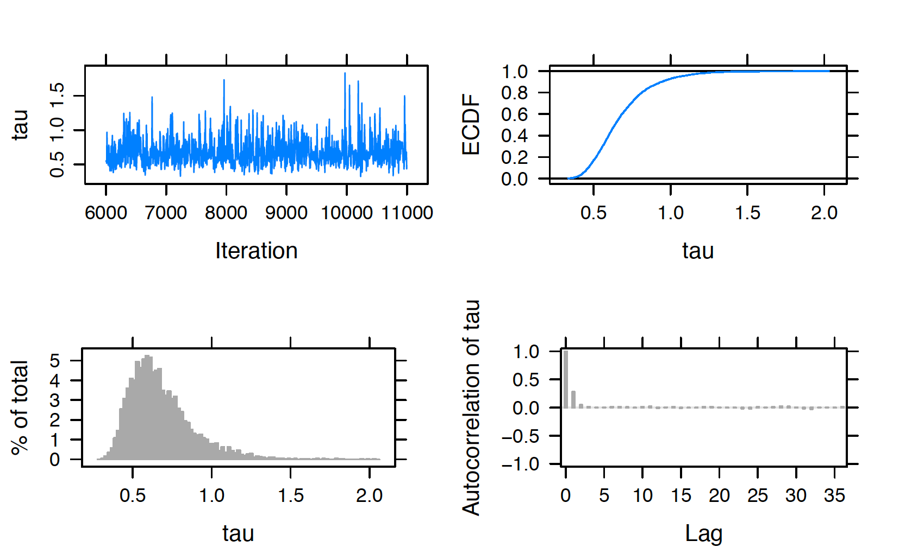
runjags package.
In practice MCMC diagnostics should be performed for all parameters to justify the overall MCMC convergence. In our example, the above diagnostics should be implemented for each of the eleven parameters in the model: \(\mu, \tau, \mu_1, \mu_2, \cdots, \mu_8\), and \(\sigma\). Once diagnostics are done, one reports posterior summaries of the parameters using print(). Note that these summaries are based on the 5000 iterations from the sample period, excluding the adapt and burn-in iterations.
print(posterior, digits = 3)
Lower95 Median Upper95 Mean SD Mode MCerr
mu 3.19 3.78 4.34 3.77 0.286 -- 0.00542
tau 0.357 0.638 1.08 0.677 0.2 -- 0.00365
mu_j[1] 2.96 3.47 3.99 3.47 0.262 -- 0.00376
mu_j[2] 3.38 3.81 4.25 3.82 0.221 -- 0.00313
mu_j[3] 3.07 3.91 4.75 3.91 0.425 -- 0.00677
mu_j[4] 3.21 3.74 4.31 3.74 0.285 -- 0.00428
mu_j[5] 3.09 4.15 5.43 4.18 0.588 -- 0.0115
mu_j[6] 2.7 3.84 4.99 3.85 0.576 -- 0.00915
mu_j[7] 2.74 3.53 4.27 3.51 0.388 -- 0.00595
mu_j[8] 3.58 4.12 4.66 4.12 0.276 -- 0.00423
sigma 0.763 0.92 1.12 0.93 0.0923 -- 0.00142 One performs various inferential summaries and inferences based on the output. For example, the movies “How to Train Your Dragon” (corresponding to \(\mu_1\)) and “Megamind” (corresponding to \(\mu_7\)) have the lowest average ratings with short 90% credible intervals, (2.96, 3.99) and (2.74, 4.27) respectively, whereas “Legend of the Guardians: The Owls of Ga’Hoole” (corresponding to \(\mu_6\)) also has a low average rating but with a wider 90% credible interval (2.70, 4.99). The differences in the width of the credible intervals stem from the sample sizes: there are eleven ratings for “How to Train Your Dragon”, four ratings for “Megamind”, and only a single rating for “Legend of the Guardians: The Owls of Ga’Hoole”. The smaller the sample size, the larger the variability in the inference, even if one pools information across groups.
Among the movies with high average ratings, “Batman: Under the Red Hood” (corresponding to \(\mu_5\)) is worth noting. This movie’s average rating \(\mu_5\) has the largest median value among all \(\mu_j\)’s, at 4.15, and also a wide 90% credible interval, (3.09, 5.43). “Batman: Under the Red Hood” also received one rating in the sample resulting in a wide credible interval.
Shrinkage
Recall that the two-stage prior in Equations (10.7) to (10.8) specifies a shared prior \(\textrm{Normal}(\mu, \tau)\) for all \(\mu_j\)’s which facilitates simultaneous estimation of the movie mean ratings (the \(\mu_j\)’s), and estimation of the variation among the movie mean ratings through the parameters \(\mu\) and \(\tau\). The posterior mean of the rating for a particular movie \(\mu_j\) shrinks the observed mean rating towards an average rating.
Figure 6.3 displays a “shrinkage plot” which illustrates the movement of the observed sample mean ratings towards an average rating.
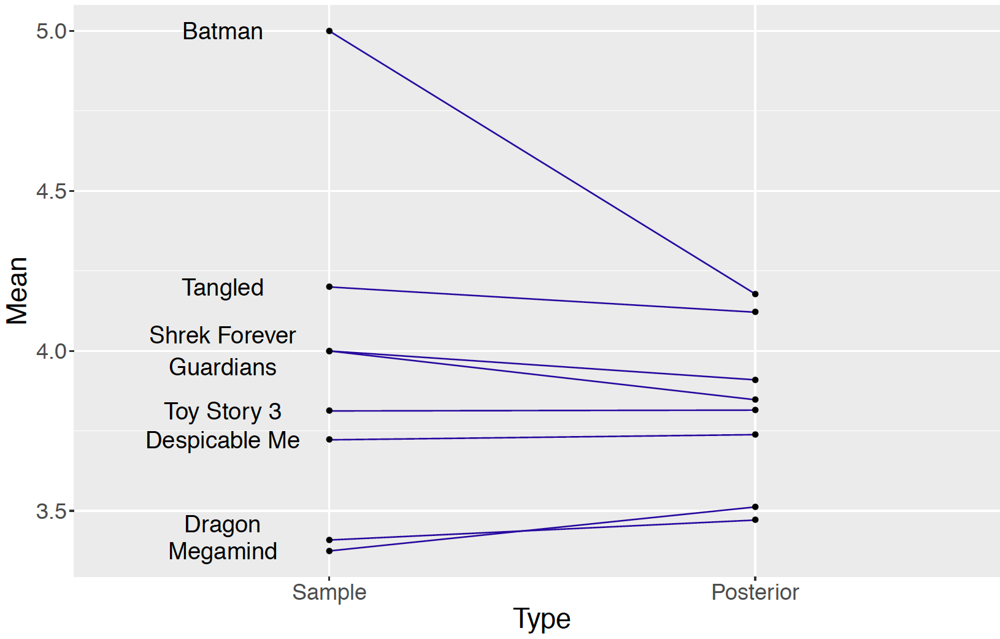
The left side of Figure 6.3 plots the sample movie rating means and lines connect the sample means to the corresponding posterior means (i.e. means of the posterior draws of \(\mu_j\)). The shrinkage effect is obvious for the movie “Batman: Under the Red Hood” which corresponds to the dot at the value 5.0 on the left. This movie only received one rating of 5.0 and its mean rating \(\mu_5\) shrinks to the value 4.178 on the right, which is still the highest posterior mean among the nine movie posterior means. A large shrinkage is desirable for a movie with a small number of ratings such as “Batman: Under the Red Hood”. For a movie with a small sample size, information about other ratings of similar movies helps to produce a more reasonable estimate at the “true” average movie rating. The amount of shrinkage is more modest for movies with larger sample sizes. Furthermore, by pooling ratings across movies, one is able to estimate the standard deviation \(\sigma\) of the ratings. Without this pooling, one would be unable to estimate the standard deviation for a movie with only one rating.
Sources of variability
As discussed in Section 10.1, the prior distribution \(\textrm{Normal}(\mu, \tau)\) is shared among the means \(\mu_j\)’s of all groups in a hierarchical Normal model, and the hyperparameters \(\mu\) and \(\tau\) provide information about the population of \(\mu_j\)’s. Specifically, the standard deviation \(\tau\) measures the variability among the \(\mu_j\)’s. When the hierarchical model is estimated through MCMC, summaries from the simulation draws from the posterior of \(\tau\) provide information about this source of variation after analyzing the data.
There are actually two sources for the variability among the observed \(Y_{ij}\)’s. At the sampling level of the model, the standard deviation \(\sigma\) measures variability of the \(Y_{ij}\) within the groups. In contrast, the parameter \(\tau\) measures the variability in the measurements between the groups. When the hierarchical model is fit through MCMC, summaries from the marginal posterior distributions of \(\sigma\) and \(\tau\) provide information about the two sources of variability.
\[\begin{equation} Y_{ij} \overset{i.i.d.}{\sim} \textrm{Normal}(\mu_j, \sigma) \,\,\, \text{[within-group variability]} \end{equation}\] \[\begin{equation} \mu_j \mid \mu, \tau \sim \textrm{Normal}(\mu, \tau) \,\,\, \text{[between-group variability]} \end{equation}\]
The Bayesian posterior inference in the hierarchical model is able to compare these two sources of variability, taking into account the prior belief and the information from the data. One initially provides prior beliefs about the values of the standard deviations \(\sigma\) and \(\tau\) through Gamma distributions. In the MovieLens ratings application, weakly informative priors of \(\textrm{Gamma}(1, 1)\) are assigned to both \(\sigma\) and \(\tau\). These prior distributions assume a priori the within-group variability, measured by \(\sigma\), is believed to be the same size as the between-group variability measured by \(\tau\).
What can be said about these two sources of variability after the estimation of the hierarchical model? As seen in the output of print(posterior, digits = 3), the 90% credible interval for \(\sigma\) is (0.763, 1.12) and the 90% credible interval for \(\tau\) is (0.357, 1.08). After observing the data, the within-group variability in the measurements is estimated to be larger than the between-group variability.
To compare these two sources of variation one computes the fraction \(R = \frac{\tau^2}{\sigma^2 + \tau^2}\) from the posterior samples of \(\sigma\) and \(\tau\). The interpretation of \(R\) is that it represents the fraction of the total variability in the movie ratings due to the differences between groups. If the value of \(R\) is close to 1, most of the total variability is attributed to the between-group variability. On the other side, if \(R\) is close to 0, most of the variation is within groups and there is little significant differences between groups.
Sample code shown below computes simulated values of \(R\) from the MCMC output. A density plot of \(R\) is shown in Figure 6.4.
tau_draws <- as.mcmc(posterior, vars = "tau")
sigma_draws <- as.mcmc(posterior, vars = "sigma")
R <- tau_draws ^ 2 / (tau_draws ^ 2 + sigma_draws ^ 2)A 95% credible interval for \(R\) is (0.149, 0.630). Since much of the posterior probability of \(R\) is located below the value 0.5, this confirms that the variation between the mean movie rating titles is smaller than the variation of the ratings within the movie titles in this example.
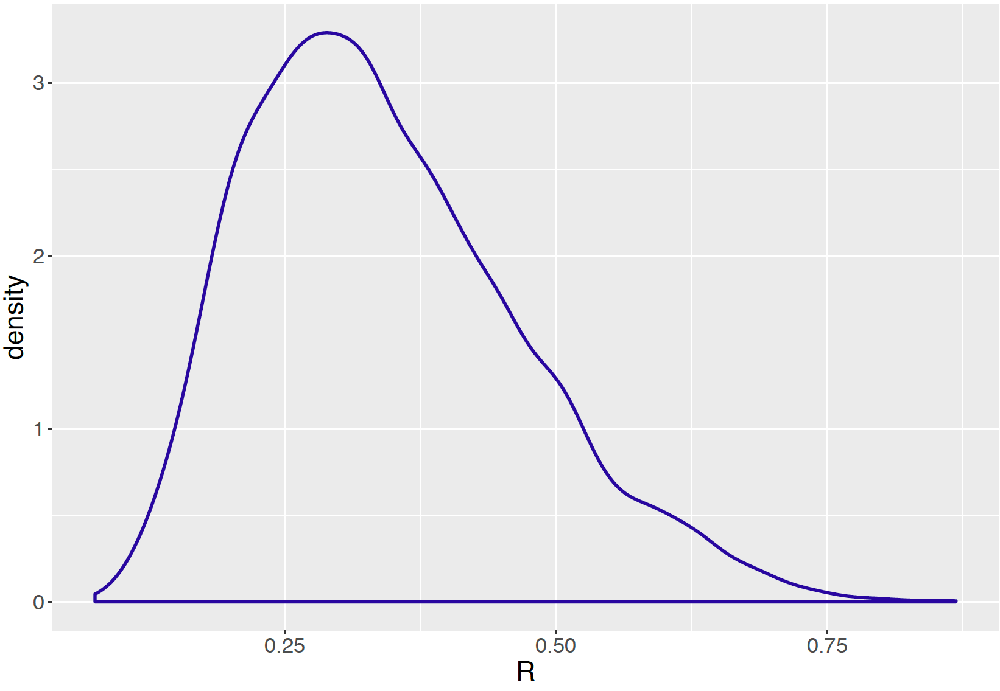
6.3 Hierarchical Beta-Binomial Modeling
6.3.1 Example: Deaths after heart attack
The New York State (NYS) Department of Health collects and releases data on mortality after Acute Myocardial Infarction (AMI), commonly known as a heart attack. Their 2015 report was the initial public data release by the NYS Department of Health on risk-adjusted mortality outcomes for AMI patients at hospitals across the state. We focus on 13 hospitals in Manhattan, New York City, with the goal of learning about the percentages of resulted deaths from heart attack for hospitals in this sample. Table 6.2 records for each hospital the number of heart attack cases, the corresponding number of resulted deaths, and their computed percentage of resulted deaths.
| Hospital | Cases | Deaths | Death % |
|---|---|---|---|
| Bellevue Hospital Center | 129 | 4 | 3.101 |
| Harlem Hospital Center | 35 | 1 | 2.857 |
| Lenox Hill Hospital | 228 | 18 | 7.894 |
| Metropolitan Hospital Center | 84 | 7 | 8.333 |
| Mount Sinai Beth Israel | 291 | 24 | 8.247 |
| Mount Sinai Hospital | 270 | 16 | 5.926 |
| Mount Sinai Roosevelt | 46 | 6 | 13.043 |
| Mount Sinai St. Luke’s | 293 | 19 | 6.485 |
| NYU Hospitals Center | 241 | 15 | 6.224 |
| NYP Hospital - Allen Hospital | 105 | 13 | 12.381 |
| NYP Hospital - Columbia Presbyterian Center | 353 | 25 | 7.082 |
| NYP Hospital - New York Weill Cornell Center | 250 | 11 | 4.400 |
| NYP/Lower Manhattan Hospital | 41 | 4 | 9.756 |
6.3.2 A hierarchical Beta-Binomial model
Treating “cases” as trials and “deaths” as successes, the Binomial sampling model is a natural choice for this data, and the objective is to learn about the death probability \(p\) of the hospitals. If one looks at the actual death percentages in Table 6.2, some hospitals have much higher death rates than other hospitals. For example, the highest death rate belongs to Mount Sinai Roosevelt, at 13.043% which is more than four times the rate of Harlem Hospital Center at 2.857%. If one assumes a common probability \(p\) for all thirteen hospitals, this model does not allow for possible differences between the death rates among these hospitals.
On the other hand, if one creates thirteen separate Binomial sampling models, one for each hospital, and conducts separate inferences, one loses the ability to use potential information about the death rate from hospital \(j\) when making inference about that of a different hospital \(i\). Since these are all hospitals in Manhattan, New York City, they may share attributes in common related to death rates from heart attack. The separate modeling approach does not allow for the sharing of information across hospitals.
A hierarchical model provides a compromise between the combined and separate modeling approaches. In Section 10.2, a hierarchical Normal density was used to model mean rating scores from different movies. In this setting, one builds a hierarchical model by assuming the hospital death rate parameters a priori come from a common distribution. Specifically, one builds a hierarchical model based on a common Beta distribution that generalizes the Beta-Binomial conjugate model described in Chapter 7. This modeling setup provides posterior estimates that partially pool information among hospitals
Let \(Y_i\) denote the number of resulted deaths from heart attack, \(n_i\) the number of heart attack cases, and \(p_i\) the death rate for hospital \(i\). The sampling density for \(Y_i\) for hospital \(i\) is a Binomial distribution with \(n_i\) and \(p_i\), as in Equation (10.19). Suppose that the proportions {\(p_i\)} independently follow the same conjugate Beta prior distribution, as in Equation (10.20). So the sampling and first stage of the prior of our model is written as follows:
Sampling, for \(i, \cdots, 13\): \[\begin{equation} Y_i \sim \textrm{Binomial}(n_i, p_i) \label{eq:BetaBinomialLik_v1} \end{equation}\]
Prior for \(p_i\), \(i = 1, \cdots, 13\): \[\begin{equation} p_i \sim \textrm{Beta}(a, b) \label{eq:BetaBinomialPrior_v1} \end{equation}\]
Note that the hyperparameters \(a\) and \(b\) are shared among all hospitals. If \(a\) and \(b\) are known values, then the posterior inference for \(p_i\) of hospital \(i\) is simply another Beta distribution by conjugacy (review material in Chapter 7 if needed): \[\begin{equation} p_i \mid y_i \sim \textrm{Beta}(a + y_i, b + n_i - y_i). \end{equation}\]
In the general situation where the hyperparameters \(a\) and \(b\) are unknown, a second stage of the prior \(\pi(a, b)\) needs to specified for these hyperparameters. With this specification, one arrives at the hierarchical model below.
Sampling, for \(i, \cdots, 13\): \[\begin{equation} Y_i \sim \textrm{Binomial}(n_i, p_i) \label{eq:BetaBinomialLik_v2} \end{equation}\]
Prior for \(p_i\), Stage1: for \(i = 1, \cdots, 13\): \[\begin{equation} p_i \sim \textrm{Beta}(a, b) \label{eq:BetaBinomialPrior_v2} \end{equation}\]
Prior for \(p_i\), Stage 2: the hyperprior: \[\begin{eqnarray} a, b \sim \pi(a, b) \label{eq:BetaBinomialHyperprior_v1} \end{eqnarray}\]
Wee use \(\pi(a, b)\) to denote an arbitrary distribution for the joint hyperprior distribution for \(a\) and \(b\). When we start analyzing the New York State heart attack death rate dataset, the specification of this hyperprior distribution \(\pi(a, b)\) will be described.
Graphical representations of the hierarchical model
Below is a sketch of a graphical representation of the hierarchical Beta-Binomial model.
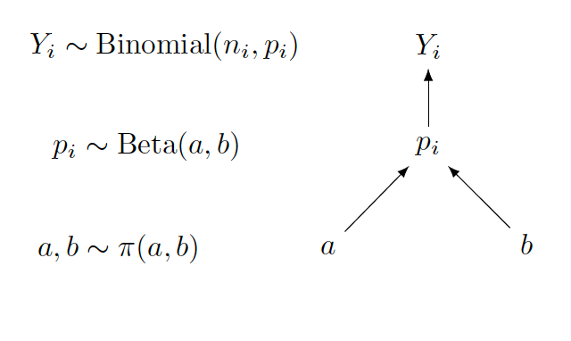
Focusing on the graph on the right, one sees that the upper section of the graph represents the sampling density, with the arrow directing from \(p_i\) to \(Y_i\). Here the start of the arrow is the parameter and the end of the arrow is the random variable. The lower section of the graph represents the prior, with arrows directing from \(a\) and \(b\) to \(p_i\). In this case, the start of the arrow is the hyperparameter and the end of the arrow is the parameter.
On the left side of the display, the sampling density, prior and hyperprior distributional expressions are written next to the graphical representation.
In the situation where the Beta parameters \(a\) and \(b\) are known constants, the graphical representation changes to the Beta-Binomial conjugate model displayed below.
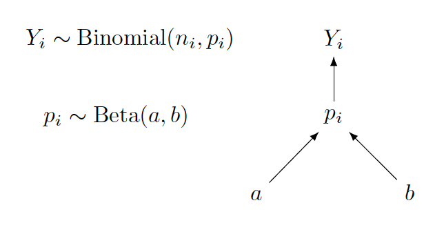
To illustrate another graphical representation, we display below the one for the separate models approach in the hospitals death rate application where a fully specified Beta prior is specified for each death rate. The separate models are represented by thirteen graphs, one for each hospital. This graphical structure shows clearly the separation of the subsamples and the resulting separation of the corresponding Bayesian posterior distributions.
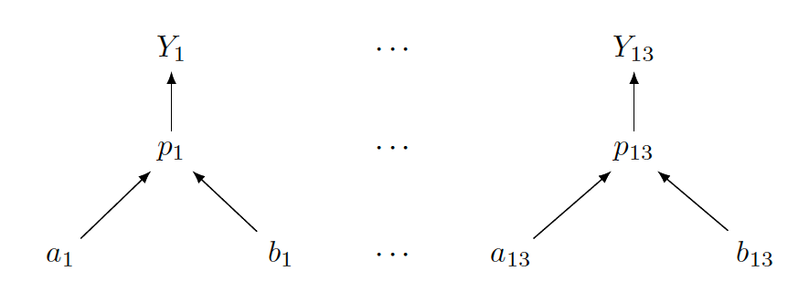
In comparing graphical representations for hierarchical models, the interested reader might notice that the structure for the hierarchical Beta-Binomial model looks different from the ones in Section 10.2 for the hierarchical Normal models. In this chapter, one is dealing with one-parameter models (recall that Beta-Binomial is an example of one-parameter models; other examples include Gamma-Poisson), whereas the Normal models in Section 10.2 involve two parameters. Typically, when working with one-parameter models, one starts from the top with the sampling density, then next writes down the priors and continues with the hyperpriors. When there are multiple parameters, one needs to be careful in describing the graphical structure. In fact, for a large number of parameters, a good graphical representation might not be feasible. In that case, one writes a representation that focuses on the key parts of the model.
Also note that there is no unique way of sketching a graphical representation, as long as the representation is clear and shows the relationship among the random variables, parameters and hyperparameters with the arrows in the correct directions.
6.3.3 Inference through MCMC
In this section the application of JAGS script for simulation by MCMC is illustrated for the hierarchical Beta-Binomial models for the New York State heart attach death rate dataset. Before this is done, we discuss the specification of the hyperprior density \(\pi(a, b)\) for the hyperparameters \(a\) and \(b\) for the common Beta prior distribution for the proportions \(p_i\)’s.
Second-stage prior
In Chapter 7, the task was to specify the values of \(a\) and \(b\) for a single Beta curve \(\textrm{Beta}(a, b)\) and the Beta shape parameter values were selected by trial-and-error using the beta.select() function in the ProbBayes package. In this hierarchical model setting, the shape parameters \(a\) and \(b\) are random and the goal is learn about these parameters from its posterior distribution.
In this prior construction, it is helpful to review some facts on Beta curves from Chapter 7. For a \(\textrm{Beta}(a, b)\) prior distribution for a proportion \(p\), one considers the parameter \(a\) as the prior count of “successes”, the parameter \(b\) as the prior count of “failures”, and the sum \(a + b\) represents the prior sample size. Also the expectation of \(\textrm{Beta}(a, b)\) is \(\frac{a}{a + b}\). From these facts, a more natural parameterization of the hyperprior distribution \(\pi(a, b)\) is \(\pi(\mu, \eta)\), where \(\mu = \frac{a}{a+b}\) is the hyperprior mean and \(\eta = a + b\) is the hyperprior sample size. One rewrites the hyperprior distribution in terms of the new parameters \(\mu\) and \(\eta\) as follows: \[\begin{equation} \mu, \eta \sim \pi(\mu, \eta), \label{eq:BetaBinomialHyperprior_v2} \end{equation}\] where \(a = \mu\eta\) and \(b = (1-\mu)\eta\). These expressions are useful in writing the JAGS script for the hierarchical Beta-Binomial Bayesian model.
A hyperprior is constructed from the \((\mu, \eta)\) representation. Assume \(\mu\) and \(\eta\) are independent which means that one’s beliefs about the prior mean are independent of the beliefs about the prior sample size. The hyperprior expectation \(\mu\) is the mean measure for \(p_i\), the average death rate across 13 hospitals. If one has little prior knowledge about the expectation \(\mu\), one assigns this parameter a Uniform prior which is equivalent to a \(\textrm{Beta}(1, 1)\) prior.
To motivate the prior choice for the hyperparameter sample size \(\eta\), consider the case where the hyperparameter values are known. If \(y^*\) and \(n^*\) are respectively the number of deaths and number of cases for one hospital, then the posterior mean of death rate parameter \(p^*\) is given by \[\begin{equation} E(p^* \mid y^*) = \frac{y^* + \mu \eta }{n^* + \eta}. \end{equation}\] With a little algebra, the posterior mean is rewritten as \[\begin{equation} E(p^* \mid y^*) = (1 - \lambda) \frac{y^*}{n^*} + \lambda \mu, \end{equation}\] where \(\lambda\) is the shrinkage fraction \[\begin{equation} \lambda = \frac{\eta}{n^* + \eta}. \end{equation}\] The parameter \(\lambda\) falls in the interval (0, 1) and represents the degree of shrinkage of the posterior mean away from the sample proportion \(y^* / n^*\) towards the prior mean \(\mu\).
Suppose one believes a priori that, for a representative sample size \(n^*\), the shrinkage \(\lambda\) is Uniformly distributed on (0, 1). By performing a transformation, this implies that the prior density for the prior sample size \(\eta\) has the form \[\begin{equation} \pi(\eta) = \frac{n^*}{(n^* + \eta)^2}, \, \, \eta > 0. \end{equation}\] Equivalently, the logarithm of \(\eta\), \(\theta = \log \eta\), has a Logistic distribution with location \(\log n^*\) and scale 1. We represent this distribution as \(\textrm{Logistic}(\log n^*, 1)\), with pdf: \[\begin{equation} \pi(\theta) = \frac{e^{-(\theta - \log n^*)}} {(1 + e^{-(\theta - \log n^*)})^2}. \end{equation}\]
With this specification of the hyperparameter distribution, one writes down the complete hierarchical model as follows:
Sampling, for \(i, \cdots, 13\): \[\begin{equation} Y_i \sim \textrm{Binomial}(n_i, p_i) \label{eq:BetaBinomialLik_v3} \end{equation}\]
Prior for \(p_i\), Stage 1: for \(i = 1, \cdots, 13\): \[\begin{equation} p_i \sim \textrm{Beta}(a, b) \label{eq:BetaBinomialPrior_v3} \end{equation}\]
Prior for \(p_i\), Stage 2: \[\begin{equation} \mu \sim \textrm{Beta}(1, 1), \end{equation}\] \[\begin{equation} \log \eta \sim \textrm{Logistic}(\log n^*, 1) \end{equation}\] where \(a = \mu\eta\) and \(b = (1-\mu)\eta\).
Writing the JAGS script
Following this model structure above, one writes out the model section of the JAGS script for the hierarchical Beta-Binomial model. The model script is saved in modelString.
modelString <-"
model {
## likelihood
for (i in 1:N){
y[i] ~ dbin(p[i], n[i])
}
## priors
for (i in 1:N){
p[i] ~ dbeta(a, b)
}
## hyperpriors
a <- mu*eta
b <- (1-mu)*eta
mu ~ dbeta(mua, mub)
eta <- exp(logeta)
logeta ~ dlogis(logn, 1)
}
"In the sampling part of the script, the loop goes from 1 to N, where N is the total number of observations, with index i. Another loop going from 1 to N is needed for the priors as each p[i] follows the same dbeta(a, b) distribution. The hyperpriors section uses the new parameterization of the \(Beta(a, b)\) distribution in terms of mu and eta. Here one expresses the hyperparameters a and b in terms of the new hyperparameters mu and eta, and then assigns to the parameters mu and logeta the independent distributions dbeta(mua, mub) and dlogist(logn, 1), respectively. One also needs to transform logeta to eta. The values of mua, mub, and logn are assigned together with the data in the setup of JAGS, following Equation (10.33) and Equation (10.34).
Define the data and prior parameters
Following the usual implementation of JAGS, the next step is to define the data and provide values for the parameters of the prior. In the script below, a list the_data contains the vector of death counts in y, the vector of hearth attack cases in n, the number of observations N, the values of mua, mub, and logn. Note that we are setting \(\log n^* = \log(100)\) which indicates that a priori we believe the shrinkage \(\lambda = \eta / (\eta + 100)\) is Uniformly distributed on (0, 1).
y <- deathdata$Deaths
n <- deathdata$Cases
N <- length(y)
the_data <- list("y" = y, "n" = n, "N" = N,
"mua" = 1, "mub" = 1,
"logn" = log(100))Generate samples from the posterior distribution
The run.jags() function is used to generate samples by MCMC in JAGS following the sample script below. It runs one MCMC chain with 1000 iterations in the adapt period, 5000 iterations of burn-in and an additional set of 5000 iterations to be run and collected for inference. One keeps tracks of all parameters in the model by using the argument monitor = c("p", "mu", "logeta"). The output of the MCMC runs is the variable posterior containing a matrix of simulated draws.
posterior <- run.jags(modelString,
n.chains = 1,
data = the_data,
monitor = c("p", "mu", "logeta"),
adapt = 1000,
burnin = 5000,
sample = 5000)MCMC diagnostics and summarization
As usual, it is important to perform MCMC diagnostics to ensure convergence of the simulated sample. The plot() function returns diagnostics plots of a designated parameter. For brevity, the diagnostics for \(\log \eta\) are performed and results shown in Figure 6.5. Readers should implement MCMC diagnostics for all parameters in the model.
plot(posterior, vars = "logeta")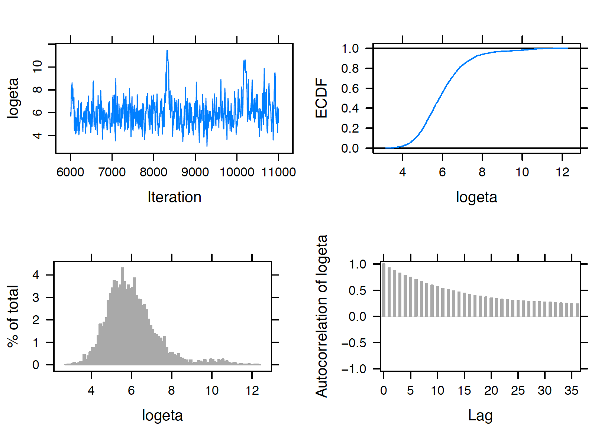
run.jags package.
After the diagnostics are performed, one reports posterior summaries of the parameters using print(). Note that these summaries are based on the 5000 iterations from the sampling period (excluding the adapt and burn-in periods).
print(posterior, digits = 3)
Lower95 Median Upper95 Mean SD Mode MCerr
p[1] 0.0314 0.0602 0.0847 0.0593 0.0138 -- 0.000619
p[2] 0.0312 0.066 0.095 0.0654 0.0156 -- 0.000496
p[3] 0.0515 0.0731 0.1 0.0741 0.0122 -- 0.000398
p[4] 0.044 0.0726 0.105 0.074 0.0155 -- 0.000486
p[5] 0.0553 0.0756 0.1 0.0765 0.0116 -- 0.000348
p[6] 0.0435 0.0655 0.0871 0.0655 0.0111 -- 0.00042
p[7] 0.0466 0.0765 0.119 0.0797 0.0191 -- 0.000717
p[8] 0.0473 0.0683 0.0889 0.0683 0.0104 -- 0.000277
p[9] 0.0442 0.0669 0.0879 0.0671 0.0111 -- 0.000301
p[10] 0.0544 0.0811 0.122 0.0845 0.0178 -- 0.000732
p[11] 0.0521 0.0704 0.0934 0.0711 0.0103 -- 0.000279
p[12] 0.0369 0.06 0.0818 0.0596 0.0116 -- 0.000504
p[13] 0.0444 0.0729 0.113 0.0752 0.0176 -- 0.000593
mu 0.0576 0.0705 0.0881 0.0714 0.00788 -- 0.000375
logeta 3.63 5.84 8.38 6.01 1.26 -- 0.107 From the posterior output, one evaluates the effect of information pooling in the hierarchical model. Figure 6.6 displays a shrinkage plot showing how the sample proportions are shrunk towards the overall death rate. Two of the lines in the figure are labelled corresponding to the death rates for the hospitals Mount Sinai Roosevelt and NYP - Allen Hospital. Mount Sinai Roosevelt’s death rate of \(6/46 = 0.13043\) exceeds the rate of NYP - Allen of \(13 / 105 = 0.12381\), but the figure shows the posterior death rate of NYP - Allen exceeds the posterior death rate of Mount Sinai Roosevelt. Due to the relatively small sample size, one has less confidence in the 0.13043 death rate of Mount Sinai and this rate is shrunk significantly towards the overall death rate in the hierarchical posterior analysis.
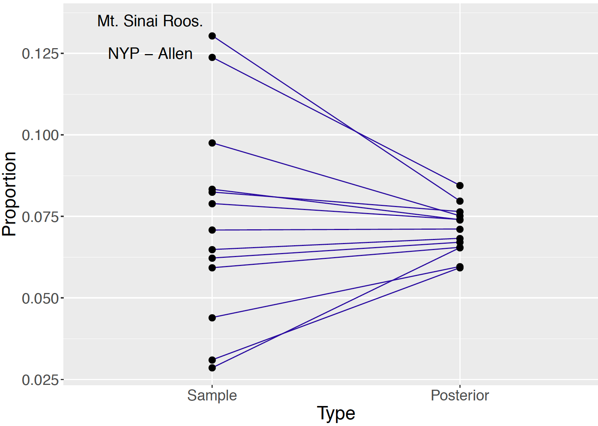
To compare the posterior densities of the different \(p_i\), one displays the density estimates in a single graph as in Figure 6.7. Because of the relatively large number of parameters, such plots are difficult to read. Combining the graph and the output above, one sees that \(p_7\) and and \(p_{10}\) have the largest median values with large standard deviations. One makes inferential statements such as Mount Sinai Roosevelt’s (corresponding to \(p_7\)) death rate of heart attack cases has a posterior 90% credible interval of (0.0466, 0.119), the highest among the 13 hospitals in the dataset.
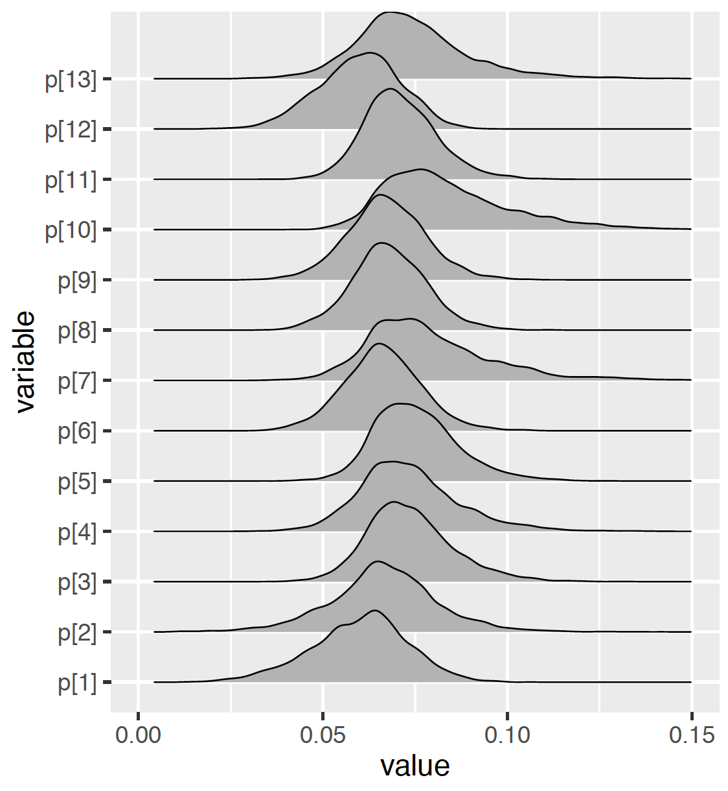
run.jags package.
Comparison of hospitals
One uses this MCMC output to compare the death rates of two hospitals directly, for example, NYP Hospital - Columbia Presbyterian Center and NYP Hospital - New York Weill Cornell Center corresponding respectively to \(p_{11}\) and \(p_{12}\). One collects the vector of simulated values of the difference of the death rates (\(\delta = p_{11} - p_{12}\)) by subtracting the sets of simulated proportion draws. From the simulated values of the difference in proportions diff, one estimates the probability that \(p_{11} > p_{12}\) is positive.
p11draws <- as.mcmc(posterior, vars = "p[11]")
p12draws <- as.mcmc(posterior, vars = "p[12]")
diff = p11draws - p12draws
sum(diff > 0)/5000
[1] 0.7872A 78.72% posterior probability of \(p_{11} > p_{12}\) indicates strong posterior evidence that the death rate of NYP Hospital - Columbia Presbyterian Center is higher than that of NYP Hospital - New York Weill Cornell Center.
Generally, when one presents a table such as Table 6.2, one is interested in ranking the 13 hospitals from best (smallest death rate) to worst (largest death rate). A particular hospital, say Bellevue Hospital Center, is interested in its rank among the 13 hospitals. The probability Bellevue has rank 1 is the posterior probability \[\begin{equation} P(p_1 < p_2, ..., p_1 < p_{13} | y), \end{equation}\] and this probability is approximated by collecting the posterior draws where the simulated value of \(p_1\) is the smallest among the 13 simulated proportions. Likewise, one computes from the MCMC output the probability that Bellevue has rank 2 through 13. These rank probabilities are displayed in Figure 6.8 for two hospitals. The probability that Bellevue is the best hospital with respect to death rate is 0.25 and by summing several probabilities, the probability that Bellevue is ranked among the top three hospitals is 0.54. In contrast, from Figure 6.8, the rank of Harlem Hospital is less certain since the probability distribution is relatively flat across the 13 possible rank values. This is not surprising since this particular hospital had only 35 cases, compared to 129 cases at Bellevue.
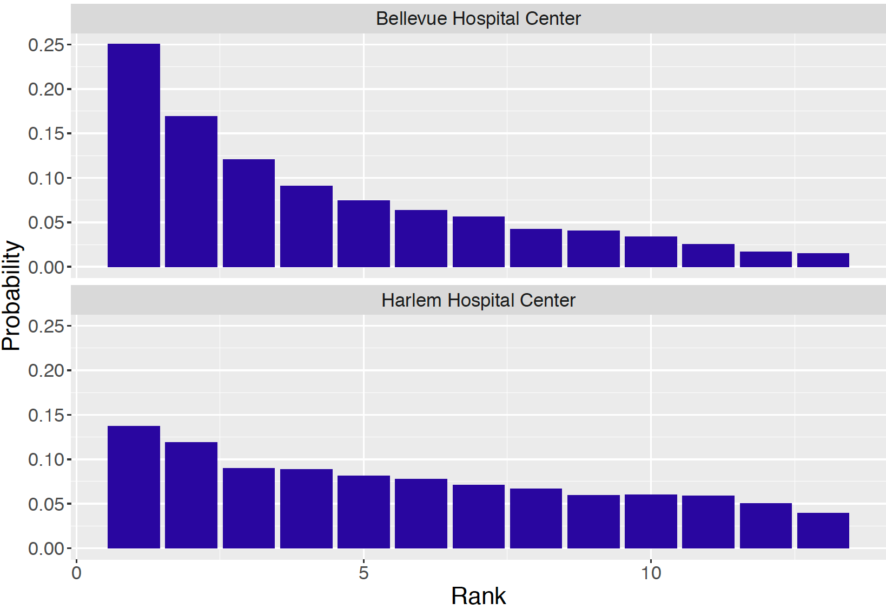
From a patient’s perspective, she would be interested in learning the identity of the hospital that is ranked best among the 13. For each simulation draw of \(p_1, ..., p_{13}\), one identifies the hospital with the smallest simulated value. By collecting this information over the 5000 draws, one computes the posterior probability that each hospital is ranked first. These probability probabilities are displayed in Figure 6.9. The identity of the best hospital is not certain, but the top three hospitals are Bellevue, NYP, NY Weill Corner, and Harlem with respective probabilities 0.250, 0.220, and 0.137 of being the best.
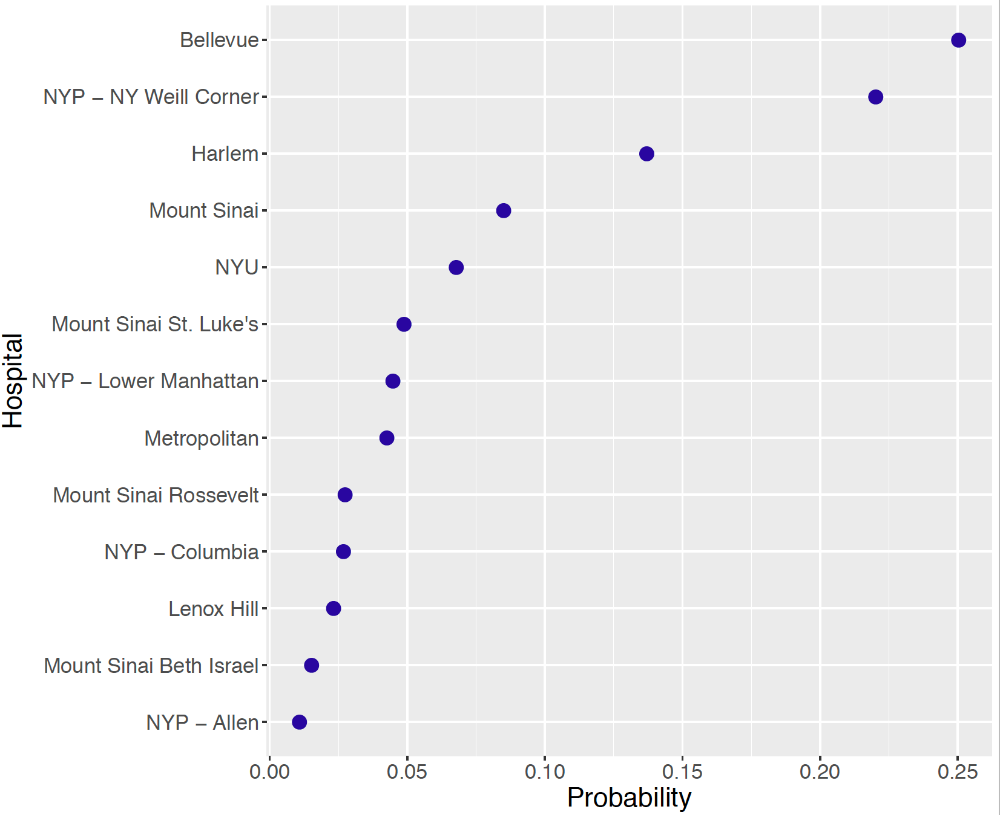
6.4 Exercises
- Time-to-Serve for Six Tennis Players
Table 6.3 displays the sample size \(n_i\) and the mean time-to-serve \(\bar y_i\) (in seconds) for six professional tennis players. Assume that the sample mean for the \(i\)-th player \(\bar y_i\) is Normally distributed with mean \(\mu_i\) and standard deviation \(\sigma / \sqrt{n_i}\) where we assume \(\sigma = 5.5\) seconds.
| Player | (n) | (y) |
|---|---|---|
| Murray | 731 | 23.56 |
| Simon | 570 | 18.07 |
| Federer | 491 | 16.21 |
| Ferrer | 456 | 21.70 |
| Isner | 403 | 22.32 |
| Kyrgios | 274 | 14.11 |
(Separate estimate) Suppose one is interested in estimating Murray’s mean time-to-serve \(\mu_1\) using only Murray’s time-to-serve data. Assume that one’s prior beliefs about \(\mu_1\) are represented by a Normal density with mean 20 and standard deviation 10 seconds. Use results from Chapter 8 to find the posterior distribution of \(\mu_1\) and construct a 90% interval estimate for \(\mu_1\).
(Combined estimate) Suppose instead that one believes that there are no differences between players and \(\mu_1 = ... = \mu_6 = \mu\). The overall mean time-to-serve is \(\bar y = 19.9\) seconds with a combined sample size \(n = 2925\). Assuming that \(\mu\) has a Normal(20,10) prior, find the posterior distribution of \(\mu\) and construct a 90% interval estimate for \(\mu\).
Which approach, part (a) or part (b), seems more reasonable in this situation? Explain.
- Time-to-Serve for Six Tennis Players (continued)
Suppose one wishes to estimate the mean time-to-serve values for the six players by the following hierarchical model. Remember that we are assuming \(\sigma = 5.5\) seconds.
\[\begin{eqnarray*} \bar{y}_i &\sim& \textrm{Normal}(\mu_i, \sigma / \sqrt{n_i}), \,\,\, i = 1, ..., 6. \\ \mu_i &\sim& \textrm{Normal}(\mu, \tau), \,\,\, i = 1, ..., 6. \\ \mu &\sim& \textrm{Normal}(20, 1 / 0.001), \\ 1 / \tau^2 &\sim& \textrm{Gamma}(0.1, 0.1). \end{eqnarray*}\]
- Use JAGS to simulate a sample of size 1000 from the posterior distribution from this hierarchical model, storing values of the means \(\mu_1, ..., \mu_6\).
- Construct a 90% interval estimate for each of the means.
- Compare the 90% estimate for Murray with the separate and combined interval estimates from Exercise 1.
- Random \(\sigma_j\)’s for Movie Ratings
In Section 10.2.2, consider the situation where the standard deviation of the ratings differ across movies, so \(\sigma_j\) represents the standard deviation of the ratings for movie \(j\).
Write out the likelihood, the prior distributions, and hyperprior distributions for this varying means and varying standard deviations model.
Discuss the implications of specifying varying \(\sigma_j\)’s by comparing this hierarchical model to the developed model in Section 10.2.2.
What prior distributions do you choose for \(\sigma_j\)’s? Why?
Carry out the simulation by MCMC using JAGS. Report and discuss the findings.
- Smoothing Counts
A general issue in statistical inference is how to handle situations where there are zero observed counts in a sample. This exercise illustrates several Bayesian modeling approaches to this problem.
- Suppose one is learning about the probability \(p\) a particular player successively makes a three-point shot in basketball. One assigns a Uniform prior for \(p\). This player attempts 10 shots and one observes \(y = 0\) successes. Derive the posterior density of \(p\) and compute the posterior mean.
- Suppose that one is learning about the probabilities \(p_1\), \(p_2\), \(p_3\), \(p_4\), \(p_5\) of five players making three-throw shots. You assign the following hierarchical prior on the probabilities. You assume \(p_1, ...., p_5\) are independent identically distributed Beta with shape parameters \(\alpha\) and \(\alpha\), and at the second stage, you assign \(\alpha\) a Uniform prior on (0, 1). Write down a graphical representation of this hierarchical model.
- In part (b), suppose that each player attempts 10 shots and you observe 0, 2, 3, 1, 3 successes for the five players. Use JAGS to obtain posterior samples from the parameters \(\alpha, p_1, p_2, p_3, p_4, p_5\). Compute the posterior means of \(\alpha\) and \(p_1\) and compare your probability estimates with the estimate of \(p\) using the single-stage prior in part (a).
- Schedules and Producers in Korean Drama Ratings
The Korean entertainment industry has been continuously booming. The global audience for K-drama is exploding across Asia and even spreading to other parts of the world, notably the US and Europe. This surge of Korean cultural popularity is called “Hallyu”, literally meaning the “Korean wave”. K-dramas are popular on multiple streaming websites in the US, such as Hulu, DramaFever, and even Netflix.
How are K-dramas being rated in Korea? How are the producing company and broadcasting schedule affecting the drama ratings? In one study, data were collected on 101 K-dramas from 2014 to 2016. Each drama was produced by one of the three main producers/companies, and was being broadcasted in one of four different times of the week. The ratings of dramas were collected from the AGB Nielsen Media Research Group. In particular, the national AGB TV ratings of each drama were recorded.
The data is stored in KDramaData.csv. Table 6.4 provides information about the variables in the complete dataset.
| Name | Variable information |
|---|---|
| Drama Name | The name of the drama |
| Schedule | 1 = Mon. (&) Tue., 2 = Wed. (&) Thu., 3 = Fri., |
| 4 = Sat. (&) Sun. | |
| Producer | 1 = Seoul Broadcasting System (SBS), 2 = Korean |
| Broadcasting System (KBS), 3 = Munhwa Broadcasting | |
| Corporation (MBC) | |
| Viewership | AGB national TV ratings, in percentage |
| Date | MM/DD/YY |
- Explore the ratings graphically by schedule and by producer.
- Explain how the ratings differ by schedule and by producer. Are there particular days when the ratings are high or low? Does one producer tend to have larger ratings than the other producer?
- Choose a subset of the
KDramaData.csvdataset for a particular producer. Develop a hierarchical model to make inference about the mean ratings of dramas across different schedules. Discuss your conclusions and the advantage of using hierarchical modeling in this situation.
6 Homework Hours for Five Schools
To compare weekly hours spent on homework by students, data is collected from a sample of five different schools. The data is stored in HWhours5schools.csv.
Explore the weekly hours spent on homework by students from the five schools. Do the school-specific means seem significantly different from each other? What about their variances?
Set up a hierarchical model with common and unknown \(\sigma\) in the likelihood, as in Section 10.2.2. Write out the likelihood, the prior distributions and the hyperprior distributions.
Use JAGS to obtain posterior samples of the parameters in the hierarchical model. Perform appropriate MCMC diagnostics.
Compute posterior means and 95% credible intervals for every school mean. Compute the posterior probability that the mean hour in school 1 is higher than that of school 2. Discuss your findings.
Compute and summarize the posterior distribution of the ratio \(R = \frac{\tau^2}{\tau^2 + \sigma^2}\). Comment on the evidence of between-school variability for this data..
- Heart Attack Deaths - New York City
In Section 10.3, the heart attack deaths dataset of thirteen hospitals in Manhattan, New York City is analyzed using a hierarchical Beta-Binomial model. A complete dataset of heart attack death information of 45 hospitals in all 5 boroughs of New York City (Manhattan, the Bronx, Brooklyn, Queens, and Staten Island) is stored in DeathHeartAttackDataNYCfull.csv. Table 6.5 lists the variables and their description.
| Variable | Description |
|---|---|
| Hospital | The name of the hospital |
| Borough | The borough that the hospital is in |
| Type | N = Non-PCI hospital; P = PCI hospital |
| Cases | The number of hearth attack cases |
| Deaths | The number of deaths among the heart attack cases |
- Write out the complete hierarchical Beta-Binomial model for the subset of thirteen hospitals in Brooklyn. Sketch a graphical representation and discuss how to choose priors and hyperpriors.
- Use JAGS to obtain posterior samples of the parameters in the hierarchical model. Perform appropriate MCMC diagnostics.
- Compute the posterior probability that the death rate of Kings County Hospital Center is higher than that of the Kingsbrook Jewish Medical Center. Report and discuss your findings.
- Heart Attack Deaths - New York City (continued)
Develop a hierarchical Beta-Binomial model for the subset of sixteen hospitals in The Bronx and Queens. Instead of allowing a \(p_i\) for each hospital \(i\) in the subset, allow a \(p_B\) to be shared among hospitals in The Bronx, and a \(p_Q\) to be shared among hospitals in Queens.
- How does the hierarchical Beta-Binomial model change from the specification in Exercise 7? Write out the complete hierarchical Beta-Binomial model, sketch a graphical representation. Discuss how to choose priors and hyperpriors.
- Use JAGS to obtain posterior samples of the parameters in the hierarchical model. Perform appropriate MCMC diagnostics.
- Compute the posterior probability that the death rate of all hospitals in The Bronx is higher than that of all hospitals in Queens. Report and discuss your findings.
- Heart Attack Deaths - New York City (continued)
Develop a hierarchical Beta-Binomial model for the complete dataset of 45 hospitals in New York City. Instead of allowing a \(p_i\) for each hospital \(i\) in the subset, allow a \(p_P\) to be shared among hospitals of Type P, and a \(p_N\) to be shared among hospitals of Type N.
- Write out the complete hierarchical Beta-Binomial model, sketch a graphical representation. Discuss how to choose priors and hyperpriors.
- Use JAGS to obtain posterior samples of the parameters in the hierarchical model. Perform appropriate MCMC diagnostics.
- Compute the posterior probability that the death rate of all hospitals of Type P higher than that of all hospitals of Type N. Report and discuss your findings.
- Can you develop a hierarchical Beta-Binomial model for all 45 hospitals in New York City that takes into account Borough and Type? Describe how you would design the hierarchical model, write JAGS script to obtain posterior samples of the parameters and discuss any findings from your work.
- Hierarchical Gamma-Poisson Modeling - Marriage Rates in Italy
Annual marriage counts per 1000 of the population in Italy from 1936 to 1951 were collected and recorded in Table 6.6. Can we learn something about Italians’ marriage rates during this 16-year period? The dataset is stored in marriage_counts.csv.
| Year | Count | Year | Count |
|---|---|---|---|
| 1936 | 7 | 1944 | 5 |
| 1937 | 9 | 1945 | 7 |
| 1938 | 8 | 1946 | 9 |
| 1939 | 7 | 1947 | 10 |
| 1940 | 7 | 1948 | 8 |
| 1941 | 6 | 1949 | 8 |
| 1942 | 6 | 1950 | 8 |
| 1943 | 5 | 1951 | 7 |
Recall that with count data, a common conjugate model is the Gamma-Poisson model, introduced in Section 8.8. Write out the likelihood, the prior distribution, and its posterior distribution under the Gamma-Poisson model.
Observations are considered i.i.d. in the model in part (a). Figure 6.10 plots the marriage rates in Italy across years. Discuss whether the i.i.d. assumption is reasonable.
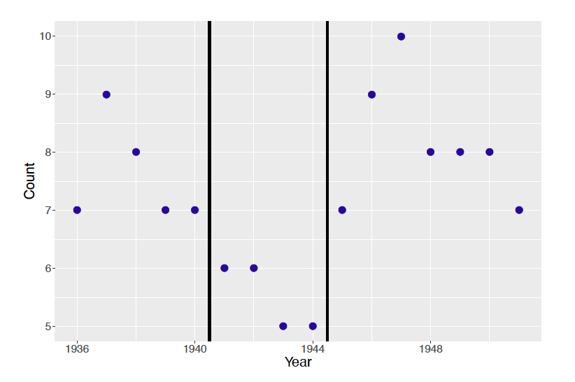
Suppose one believes that the mean marriage rate differs across the three time periods. Using this belief, model the Italian marriage rates in a hierarchical approach. Write out the likelihood, the prior distributions, and any hyperprior distributions under a hierarchical Gamma-Poisson model.
Sketch a graphical representation of the hierarchical Gamma-Poisson model.
Simulate posterior draws by MCMC using JAGS. Perform MCMC diagnostics and make sure your MCMC has converged.
Do you see clear differences between the three rate parameters in the posterior? Report and discuss your findings.
- Hierarchical Gamma-Poisson Modeling - Fire Calls in Pennsylvania
Table 6.7 displays the number of fire calls and the number of building fires for ten counties in Montgomery County, Pennsylvania from 2015 through 2019. This data is currently described as ``Emergency - 911 Calls” from kaggle.com. Suppose that the number of building fires for the \(j\)-th zip code is Poisson with mean \(n_j \lambda_j\), where \(n_j\) and \(\lambda_j\) are respectively the number of fire calls and rate of building fires for the \(j\)-th zip code.
| Zip Code | Fire Calls | Building Fires |
|---|---|---|
| 18054 | 266 | 12 |
| 18103 | 1 | 0 |
| 19010 | 1470 | 59 |
| 19025 | 246 | 11 |
| 19040 | 1093 | 47 |
| 19066 | 435 | 26 |
| 19116 | 2 | 0 |
| 19406 | 2092 | 113 |
| 19428 | 2025 | 73 |
| 19474 | 4 | 1 |
- Suppose that the building fire rates \(\lambda_1, ..., \lambda_{10}\) follow a common Gamma(\(\alpha, \beta\)) distribution where the hyperparameters \(\alpha\) and \(\beta\) follow weakly informative distributions. Use JAGS to simulate a sample of size 5000 from the joint posterior distribution of all parameters of the model.
- The individual estimates of the building rates for zip codes 18054 and 19010 are \(12/266\) and \(59/1470\), respectively. Contrast these estimates with the posterior means of the rates \(\lambda_1\) and \(\lambda_{3}\).
- The parameter \(\mu = \alpha / \beta\) represents the mean building fire rates across zip codes. Construct a density estimate of the posterior distribution of \(\mu\).
- Suppose that the county has 50 fire calls to the zip code 19066. Use the simulated predictive distribution to construct a 90% predictive interval for the number of building fires.
- Hierarchical Gamma-Exponential Modeling - Times Between Traffic Accidents
Chapter 8 Exercise 20 describes the Exponential distribution, which is often used as a model for time between events, such as traffic accidents. The exercise also describes the Gamma distribution as a conjugate prior choice for the Exponential data model. 10 times between traffic accidents are collected: 1.5, 15, 60.3, 30.5, 2.8, 56.4, 27, 6.4, 110.7, 25.4 (in minutes).
Suppose the 10 collected times are observed at 4 different locations, shown in Table 6.8. Use this information, model the times between traffic accidents in a hierarchical approach. Write out the likelihood, the prior distributions, and any hyperprior distributions under a hierarchical Gamma-Exponential model.
Sketch a graphical representation of the hierarchical Gamma-Exponential model.
Simulate posterior draws by MCMC using JAGS. Perform MCMC diagnostics and make sure your MCMC has converged.
Do you see clear differences between the rate of traffic accidents at the 5 locations? Report and discuss your findings.
| Time | Location | Time | Location |
|---|---|---|---|
| 1.5 | 1 | 15 | 1 |
| 60.3 | 2 | 30.5 | 2 |
| 2.8 | 3 | 56.4 | 3 |
| 27 | 4 | 6.4 | 4 |
| 110.7 | 5 | 25.4 | 5 |
- Bird Survey Trend Estimates
The North American Breeding Bird Survey (BBS) is a yearly survey to monitor the bird population. Regression models were used to estimate the change in population size for many species of birds between 1966 to 1999. For each of 28 particular grassland species of birds, Table 6.9 displays the trend estimate \(\hat \beta_i\) and the corresponding standard error \(\sigma_i\). This data is stored in the data file BBS_survey.csv. Assume that the trend estimates are independent with \(\hat \beta_i \sim \textrm{Normal}(\beta_i, \sigma_i)\) where we assume that the standard errors {\(\sigma_i\}\) are known.
| Species Name | Trend | SE | Species Name | Trend | SE |
|---|---|---|---|---|---|
| Upland Sandpiper | 0.76 | 0.39 | Western Meadowlark | -0.75 | 0.17 |
| Long-billed Curlew | -0.77 | 1.01 | Chestnut-col Longspur | -1.36 | 0.68 |
| Mountain Plover | -1.05 | 2.24 | McCown’s Longspur | -9.29 | 8.27 |
| Greater Prairie-Chicken | -2.54 | 2.33 | Vesper Sparrow | -0.61 | 0.24 |
| Sharp-tailed Grouse | -0.92 | 1.43 | Savannah Sparrow | -0.34 | 0.29 |
| Ring-necked Pheasant | -1.06 | 0.32 | Baird’s Sparrow | -2.04 | 1.48 |
| Northern Harrier | -0.80 | 4.00 | Grasshopper Sparrow | -3.73 | 0.47 |
| Ferruginous Hawk | 3.52 | 1.31 | Henslow’s Sparrow | -4.82 | 2.50 |
| Common Barn Owl | -2.00 | 2.14 | LeConte’s Sparrow | 0.91 | 0.95 |
| Short-eared Owl | -6.23 | 4.55 | Cassin’s Sparrow | -2.10 | 0.51 |
| Burrowing Owl | 1.00 | 2.74 | Dickcissel | -1.46 | 0.28 |
| Horned Lark | -1.89 | 0.22 | Lark Bunting | -3.74 | 2.30 |
| Bobolink | -1.25 | 0.31 | Sprague’s Pipit | -5.62 | 1.34 |
| Eastern Meadlowlark | -2.69 | 0.17 | Sedge Wren | 3.18 | 0.73 |
- Suppose one assumes that the population trend estimates are equal, that is, \(\beta_1 = ... \ \beta_{28} = \beta\). Using JAGS to simulate from the posterior distribution of \(\beta\) assuming a weakly informative prior on \(\beta\). Find the posterior mean and posterior standard deviation of \(\beta\) and compare your answers to the trend estimates and standard errors in Table 6.9.
- Next assume that the population trend estimates \(\beta_1 = ... \ \beta_{28}\) are a random sample from a Normal distribution with mean \(\mu\) and standard deviation \(\tau\). Assuming weakly informative priors on \(\mu\) and \(\tau\), use JAGS to simulate from the posterior distribution of all parameters. Find the posterior means of the \(\{\beta_j\}\) and compare your estimates with the trend estimates in Table 6.9.
- Predicting Baseball Batting Averages
The data file batting_2018.csv contains batting data for every player in the 2018 Major League Baseball season. The variables AB.x and H.x in the dataset contain the number of at-bats (opportunities) and number of hits of each player in the first month of the baseball season. One assumes that \(y_i\), the number of hits of the \(i\)-th player is Binomial(\(n_i, p_i\)) where \(n_i\) is the number of at-bats and \(p_i\) is the probability of a hit.
Select a random sample of 20 players from the dataset.
Assume that the hitting probabilities \(\{p_i\}\) have a common Beta(\(a, b\)) prior where \(a = \eta \mu\) and \(b = \eta (1 - \mu)\). Assume that the hyper parameters \(\eta\) and \(\mu\) are independent where \(\mu\) is Uniform(0, 1) and \(\log(\eta)\) has a logistic distribution with mean \(\log(50)\) and scale 1.
Use a JAGS script similar to what is presented in Section 10.3.3, draw a sample of 5000 from the posterior distribution, monitoring values of the \(\{p_i\}\), \(\mu\), and \(\log(\eta)\).
Compare unpooled, pooled, and hierarchical estimates of the \(\{p_i\}\) in predicting the batting averages in the remainder of the season.
- Estimating Kidney Cancer Death Rates
This exercise is a variation of an activity described in Gelman and Nolan (2017). Suppose one is interested in estimating the kidney cancer death rates for the ten Ohio counties displayed in Table 6.10. Suppose the true death rates \(\theta_1, ..., \theta_{10}\) are a sample from a Gamma(\(\alpha, \beta\)) distribution. The observed number of deaths \(y_j\) in the \(j\)th county is assumed to be Poisson(\(n_j \theta_j\)) where \(n_j\) is the population size.
| County | Population | County | Population |
|---|---|---|---|
| Cuyahoga | 1,243,857 | Jackson | 32,384 |
| Gallia | 29,979 | Knox | 61,893 |
| Hamilton | 816,684 | Noble | 14,354 |
| Henry | 27,086 | Seneca | 55,207 |
| Holmes | 43,892 | Van Wert | 28,281 |
- Assuming \(\alpha = 27, \beta = 58000\), simulate ten true cancer rates \(\theta_1, ..., \theta_{10}\) from a Gamma(\(\alpha, \beta\)) distribution. For each county, simulate the number of deaths in all counties. (Use the following R code.)
true_rates <- rgamma(10, shape = 27, rate = 58000)
pop_size <- c(1243857, 29979, 816684, 27086, 43892,
32384, 61893, 14354, 55207, 28281)
deaths <- rpois(10, lambda = pop_size * true_rates)Compute the observed death rates {\(y_j / n_j\)}. Identify the counties with the lowest and highest death rates.
Using JAGS, fit a hierarchical model to the data assuming weakly informative Gamma priors on the parameters \(\alpha\) and \(\beta\). Simulate a sample of 10,000 draws from the posterior distribution and compute the posterior means of the {\(\theta_j\)}.
Identify the counties with the lowest and highest posterior means of the true rates. Compare these
best" andworst” counties with the best and worst counties identified in part (b).
Exercises 16 to 20 are additional Bayesian hierarchical models with more complicated structures. These exercises are here to help the reader gain familiarity of working with joint posterior distribution and deriving full conditional posterior distributions. These skills are essential to creating Metropolis and Gibbs sampling algorithms by oneself (as opposed to using JAGS).}
- Inference for the Binomial \(N\) parameter
Suppose that we want inference about an unknown number of animals \(N\) in a fixed-size population. On five separate days, we take photographs of some areas where they reside, and count the number of animals in the photos (\(y_1, \dots, y_5\)). Suppose further that each animal has a constant probability \(\theta\) of appearing in a photograph and that appearances are independent across animals and days. A reasonable model for such data is a Binomial distribution, \(y_i \mid N, \theta \sim \text{Binomial}(N, \theta)\). In our setting, neither the number of trials \(N\) nor the probability \(\theta\) are known.
To get a posterior distribution for \(N\) and \(\theta\), we propose the following system of models (Raftery 1988): \[\begin{eqnarray*} y_i \mid N, \theta &\sim& \text{Binomial}(N, \theta) \\ N \mid \theta, \lambda &\sim& \text{Poisson}(\lambda / \theta) \\ \pi(\lambda , \theta) &\propto& 1 / \lambda, \end{eqnarray*}\] where \(\lambda > 0\) is a continuous random variable introduced to help with computations.
Write down the joint posterior distribution, \(\pi(N, \theta, \lambda \mid y_1, \dots, y_5)\), up to a multiplicative constant.
Find an expression for the conditional distribution, \(\pi(\lambda \mid y_1, \dots, y_5, N, \theta)\). Write the name of the distribution and expressions for its parameter values.
Find the posterior distribution \(\pi(N, \theta \mid y_1, \dots, y_5)\) by integrating \(\pi(N, \theta, \lambda \mid y_1, \dots, y_5)\) with respect to \(\lambda\). You don’t need to name the distribution; just write its mathematical form.
Find the conditional distribution, \(\pi(\theta \mid y_1, \dots, y_5, N)\). Write the name of the distribution and expressions for its parameter values.
- Successes and Failures in Tests
A standard model for success or failure in testing situations is the item response model, also called the Rasch model. Suppose that \(J\) persons are given a test with \(K\) items. For \(j = 1, \dots, J\) and \(k = 1, \dots, K\), let \(y_{jk}=1\) if person \(j\) gets item \(k\) correct, and let \(y_{jk}=0\) otherwise. The Rasch model is \[\begin{equation} p(Y_{jk} = 1 \mid \pi_{jk}) = \text{Bernoulli}(\pi_{jk}) (\#eq:rasch1) \end{equation}\] \[\begin{equation} \log\left(\frac{\pi_{jk}}{1 - \pi_{jk}}\right) = \alpha_j - \beta_k. (\#eq:rasch2) \end{equation}\] Here, \(\alpha_j\) represents the ability of person \(j\), and \(\beta_k\) represents the difficulty of item \(k\). For a Bayesian version of the Rasch model, we use the hierarchical model distributions, \[\begin{eqnarray*} \alpha_j &\sim& \textrm{Normal}(0, \sqrt{1/\tau}), \,\,\, \text{for } j = 1,\dots, J\\ \beta_k &\sim& \textrm{Normal}(\mu, \sqrt{1/\phi}), \,\,\, \text{for } k = 1,\dots, K \end{eqnarray*}\] where \(\tau\) and \(\sigma\) are precisions. For prior distributions, we use \[\begin{eqnarray*} \tau &\sim& \text{Gamma}(a, b), \\ \phi &\sim& \text{Gamma}(c, d), \\ \mu &\sim& \textrm{Normal}(0, e), \end{eqnarray*}\] for known positive constants (\(a, b, c, d, e\)). We intend to run an MCMC to estimate the posterior distributions of all parameters. This problem asks you to outline some of the MCMC steps.
Write the joint posterior distribution of \(\pi(\alpha_1, \dots, \alpha_J, \beta_1, \dots, \beta_K, \tau, \phi, \mu \mid \{y_{jk}\})\), up to a constant.
Write the steps you’d take to sample \(\mu\) given \((\alpha_1, \dots, \alpha_J, \beta_1, \dots, \beta_K, \tau, \phi, \{y_{jk}\})\). If you can use a Gibbs step, write the name of the full conditional posterior distribution for \(\mu\) and its parameter values. If you use a Metropolis step, write an expression for the acceptance probability and suggest a family of proposal distributions.
Write the steps you’d take to sample \(\phi\) given \((\alpha_1, \dots, \alpha_J, \beta_1, \dots, \beta_K, \tau, \mu, \{y_{jk}\})\). If you can use a Gibbs step, write the name of the full conditional posterior distribution for \(\phi\) and its parameter values. If you use a Metropolis step, write an expression for the
acceptance probability and suggest a family of proposal distributions.Write the steps you’d take to sample \(\tau\) given \((\alpha_1, \dots, \alpha_J, \beta_1, \dots, \beta_K, \phi, \mu, \{y_{jk}\})\). If you use a Gibbs step, write the name of the full conditional distribution for \(\tau\). If you use a Metropolis step, write an expression for the acceptance probability and suggest a family of proposal distributions.
- Success and Failures in Tests (continued)
Continuing from Exercise 17.
Write the steps you’d take to sample \(\beta_k\) given \\((\alpha_1, \dots, \alpha_J, \beta_1, \dots \beta_{k-1}, \beta_{k+1}, \dots, \beta_K, \tau, \phi, \mu, \{y_{jk}\})\). If you can use a Gibbs step, write the name of the full conditional posterior distribution for \(\beta_k\) and its parameter values. f you use a Metropolis step, write an expression for the acceptance probability and suggest a family of proposal distributions.
Write the steps you’d take to sample \(\alpha_j\) given \\((\alpha_1, \dots, \alpha_{j-1}, \alpha_{j+1}, \dots, \alpha_J, \beta_1, \dots, \beta_K, \tau, \phi, \mu, \{y_{jk}\})\). If you use a Gibbs step, write the name of the full conditional distribution for \(\alpha_j\). If you use a Metropolis step, write an expression for the acceptance probability and suggest a family of proposal distributions.
- Success and Failures in Tests (continued)
Suppose that you have 1000 approximately uncorrelated draws of the parameters from the joint posterior distribution of the Rasch model in Exercise 17. Describe how you would do the following tasks.
Find the posterior probability that the variability in peoples’ abilities exceeds the variability in item difficulty.
Find the item in the test that appears to be the most difficult, and attach a posterior probability that it in fact is the most difficult among all \(K\) items.
Perform a posterior predictive check of the model.
- AR(1) Models in Finance and Macroeconomics
A common model in finance and macroeconomics is the AR(1) model. Suppose that we have \(n\) measurements ordered in time. For \(j = 1,
\dots, n\), let \(y_j\) be the measurement at time \(j\). Suppose we consider the measurement at time 1 as known (not a random variable). Then, for \(j=2, \dots, n\), a typical AR(1) model is \(y_j = \beta y_{j-1} + \epsilon_j\) where \(\epsilon_j \sim \textrm{Normal}(0, \sigma)\). Equivalently, we have
\[\begin{equation}
p(y_{j} \mid y_{j-1}, \dots, y_1, \beta, \sigma^2) = \text{Normal}(\beta
y_{j-1}, \sigma) \,\,\,\, \text{for } j=2, \dots, n. \nonumber \\
(\#eq:arm1)
\end{equation}\] Note that what happens at time \(j\) only depends on what happened at time \(j-1\). For prior distributions, we will use \[\begin{eqnarray*}
1/\sigma^2 &\sim& \text{Gamma}(a, b), \\
\beta &\sim& \text{Normal}(c, d),
\end{eqnarray*}\] for known positive constants (\(a, b, c, d\)). We intend to run an MCMC sampler to estimate the posterior distribution of \((\beta,
\sigma^2)\). Whenever possible, we will sample directly from full conditionals. This problem asks you to outline some of the MCMC steps, and to make a prediction for a future observation.
- Write the kernel of the joint distribution of \(\pi(\beta, \sigma^2 \mid y_1, \dots, y_n)\). [Hint: write \(p(y_2, \dots, y_n \mid y_1, \beta, \sigma^2) = p(y_n \mid y_{n-1}, \dots, y_2, y_1, \beta, \sigma^2) p(y_{n-1} \mid y_{n-2}, \dots, y_2, y_1, \beta, \sigma^2) \cdots\)
\(p(y_2 \mid y_1, \beta, \sigma^2)\).]
Write the steps you’d take to sample \(\sigma^2\) given \((\beta, y_1, \dots, y_n)\). If you use a Gibbs step, write the name of the full conditional distribution for \(\sigma\) and its parameter values. If you use a Metropolis step, write an expression for the acceptance probability and suggest a family of proposal distributions.
Write the steps you’d take to sample \(\beta\) given \((\sigma, y_1, \dots, y_n)\). If you use a Gibbs step, write the name of the full conditional distribution for \(\beta\) and its parameter values. If you use a Metropolis step, write an expression for the acceptance probability and suggest a family of proposal distributions.
Describe how you would make a 95% posterior interval for the future value of \(Y_{n+2}\).